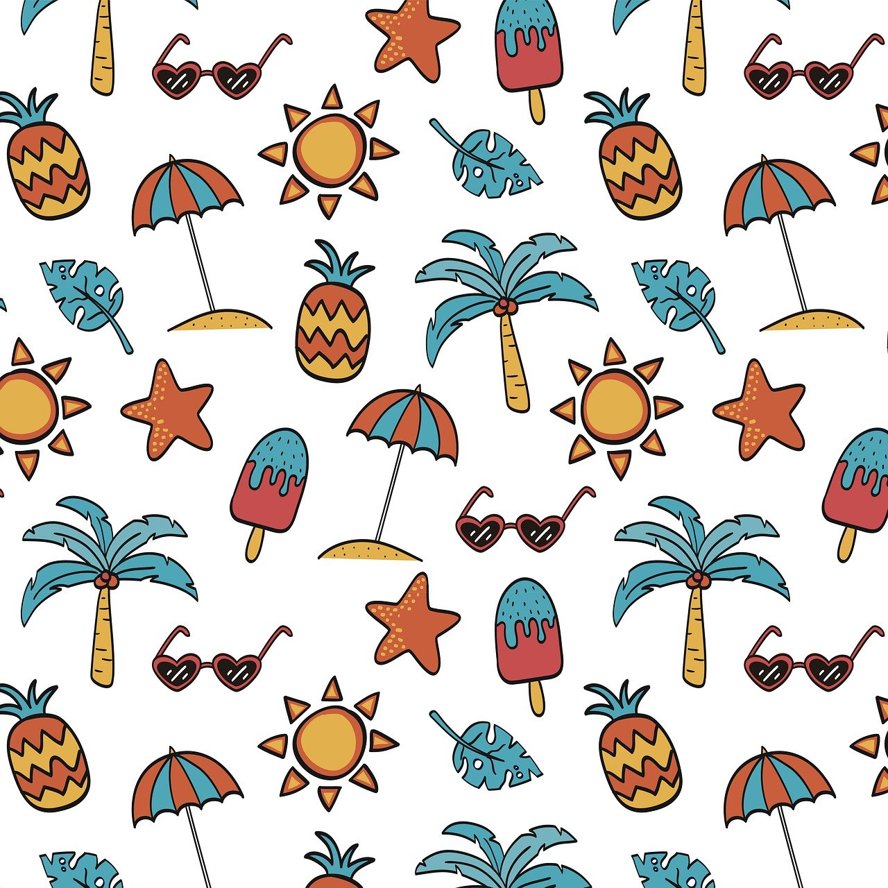

<ion-header [translucent]="true">
</ion-header>
<ion-content [fullscreen]="true">
  <div class="segment-container">
    <ion-button (click)="showVarillaModal()">
      <ion-icon name="search"></ion-icon>
    </ion-button>
    <ion-segment id="segment" (ionChange)="segmentChanged($event)">
      <ion-segment-button value="varilla">
        <ion-label>{{currentVarilla.name}}</ion-label>
      </ion-segment-button>
      <ion-segment-button value="paspartu">
        <ion-label>Paspartú</ion-label>
      </ion-segment-button>
    </ion-segment>
    <ion-button (click)="showPaspartuModal()">
      <ion-icon name="color-palette"></ion-icon>
    </ion-button>
  </div>

  <div class="cuadro">
    <!--Varilla Fixed-->
    <div class="varilla fixed"
      style="border-color: {{ slideMode != 'varilla' ? currentVarilla.color : 'transparent'}};">
      <!--Paspartu fixed-->
      <div *ngIf="slideMode == 'varilla'" class="paspartu" style="border-color:{{currentPaspartu}}"></div>
      <!--Paspartu slider-->
      <ion-slides [hidden]="slideMode == 'varilla'" id="paspartuSlides" (ionSlideDidChange)="paspartuSlideChanged()">
        <ion-slide *ngFor="let paspartu of paspartus">
          <div class="paspartu" style="border-color: {{paspartu}};"></div>
        </ion-slide>
      </ion-slides>
    </div>

    <!--Varillas slider-->
    <ion-slides [hidden]="slideMode == 'paspartu'" id="varillaSlides" (ionSlideDidChange)="varillaSlideChanged()">
      <ion-slide *ngFor="let varilla of varillas">
        <div class="varilla" style="border-color: {{varilla.color}};"></div>
      </ion-slide>
    </ion-slides>
  </div>
  <ion-slides id="imageSlides" [options]="imageSlidesOptions">
    <ion-slide></ion-slide>
    <ion-slide></ion-slide>
  </ion-slides>
</ion-content>